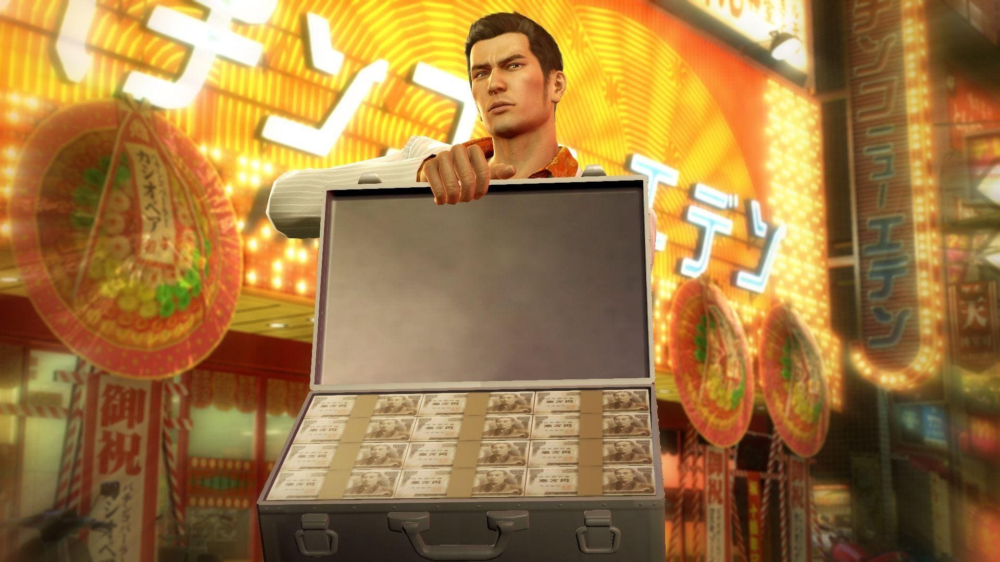
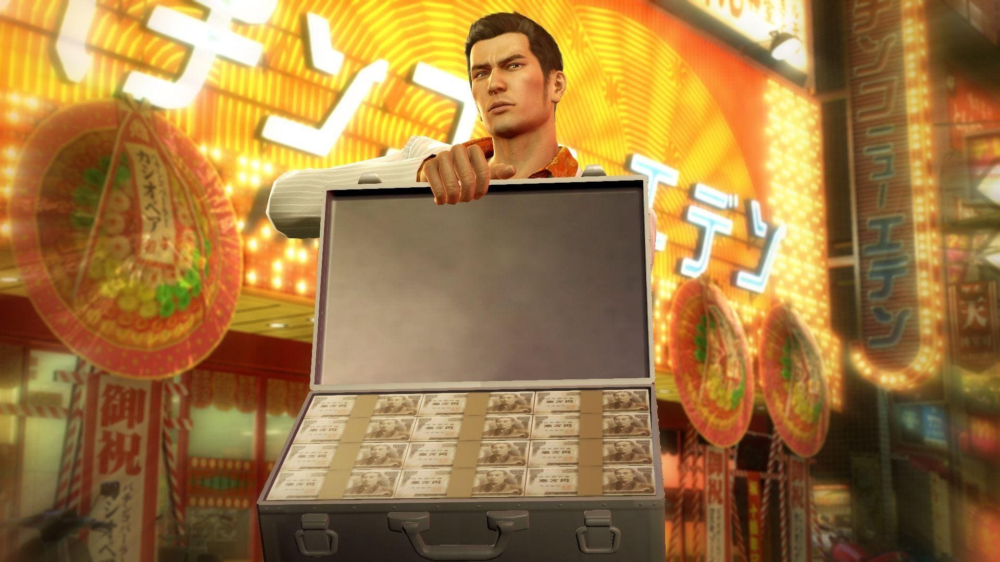

O brilho, o glamour e a decadência dos anos 80 estão de volta em Yakuza 0. Lute com tudo em Tóquio e Osaka com o Kazuma Kiryu e o já conhecido Goro Majima. Jogue como Kazuma Kiryu e descubra os vários problemas que encontra quando uma simples cobrança de dívida dá errado e seu alvo acaba assassinado. Em seguida, calce os bicos de prata de Goro Majima e experimente sua 'rotina' como o proprietário de uma casa noturna. Escolha entre três estilos diferentes de luta instantaneamente e acabe com a raça de bandidos, capangas, arruaceiros e vagabundos. Leve o combate a um outro nível usando objetos do ambiente, como bicicletas, placas e portas de carro, e garanta combos e nocautes arrasadores. Lutar não é a única forma de passar o tempo no Japão de 1988: de discotecas e clubes privados a fliperamas clássicos da SEGA, há centenas de distrações neste mundo de luzes de néon.
Interaja com os habitantes coloridos do distrito da luz vermelha: ajude uma dominatrix de S&M a aprender sua profissão, ou garanta que um artista de rua possa chegar ao banheiro a tempo – há 100 histórias incríveis para descobrir.
Em dezembro de 1988, durante o período de bolhas do Japão, Kazuma Kiryu, um yakuza, é suspeito de assassinato em Kamurocho, Tóquio, depois de um homem que ele recolheu dinheiro no "Lote Vazio" da cidade, que atualmente está sendo combatido internamente pela Família Dojima de Sohei Dojima, um ramo poderoso da família yakuza principal, o Clã Tojo, para o "Projeto de Revitalização Kamurocho". Forçado a sair da família, Kiryu conhece Tetsu Tachibana, um poderoso proprietário de imóveis contratado por seu pai adotivo encarcerado, Shintaro Kazama, que promete ajudar Kiryu a limpar seu nome. Juntos, eles tentam impedir que o Lote Vazio caia nas mãos da Família Dojima
-
Yakuza 0 é um jogo estranho, ele mistura uma história extremamente séria, com um mundo recheado de situações, minigames e atividades completamente sem sentido. E de algum jeito consegue fazer essas duas facetas funcionarem de uma forma que eu nunca tinha visto.
-
Yakuza traz tudo que um grande jogo possui. Personagens memoráveis, envolventes e carismáticos, uma trama muito bem desenvolvida e completa. Tudo no game vale a pena fazer, nem que seja por pelo menos uma vez.
-
Yakuza 0 só tem um único problema: Vc vai gostar tanto dessa obra prima, mas tanto, que vai ter que preparar o bolso, pois sem dúvida nenhuma, vc vai querer comprar todos os outros games da franquia e acompanhar ainda mais o que a história reserva para o Kiryu. E no fim, vc vai ver que nem foi um problema, pois a jornada do Dragão de Dojima vale cada centavo
 
